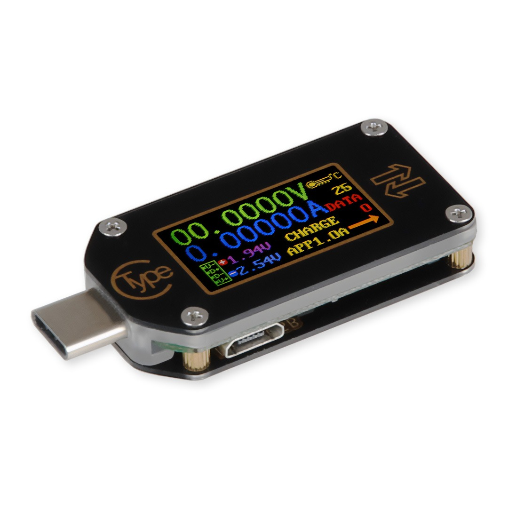

Obecné
O aplikaci
Tato webová stránka čte měřič RDTech TC66C pro USB-C a ovládá zdroj RDTech DPS3005 přímo v prohlížeči. Používá Web Serial API, takže nepotřebuje instalaci ani server. Měřič připojíte přes USB a uvidíte živé hodnoty, záznam uložený v měřiči a test baterie. Zdroj připojíte přes USB nebo Bluetooth.
- Stránka Měřič ukazuje živé napětí, proud, výkon a další hodnoty s grafy.
- Stránka Test baterie zaznamená vybíjení a spočítá kapacitu powerbanky.
- Stránka Zdroj ovládá zdroj RDTech DPS3005 přes USB nebo Bluetooth. Viz Zdroj a tlačítka na zdroji.
- Aplikace je progresivní webová aplikace (PWA). Můžete ji nainstalovat a používat offline.
Připojení
Další připojení. Po prvním připojení použije tlačítko Připojit stejný port znovu, bez dialogu pro výběr portu. Jiný port vyberete tlačítkem Vybrat port….
Ztráta spojení. Když se kabel uvolní nebo se zařízení restartuje, stránka se jednu až dvě minuty pokouší znovu připojit. Běžící test baterie pokračuje, až bude měřič zpět. Za dobu bez dat stránka nepřičte žádný náboj.
Instalace aplikace
Aplikaci můžete nainstalovat do počítače nebo telefonu. Pak se otevírá ve vlastním okně a funguje offline.
V Chrome nebo Edge klikněte v záhlaví na Instalovat nebo použijte ikonu instalace v adresním řádku.
Na iPhonu nebo iPadu:
- Otevřete stránku v Safari.
- Klepněte na tlačítko Sdílet.
- Klepněte na Přidat na plochu.
iOS nemá Web Serial API, takže se tam aplikace k měřiči nepřipojí.
Aktualizace. Aplikace hledá novou verzi při otevření a každých 30 minut. Když je nová verze připravená, lišta dole nabídne nové načtení. Aplikace se sama nenačte znovu, takže běžící test se nepřeruší. Můžete také kliknout na Zkontrolovat aktualizace dole na každé stránce.
Měřič
Stránka: Měřič
Zařízení

RDTech TC66C je malý USB-C měřič. Zapojte ho mezi nabíječku a zařízení. Měří výkon, který jím prochází.
- Konektory
- Zástrčka USB-C a zásuvka USB-C
- Pracovní napětí
- 3,5–24 V
- Proud
- 0–5 A
- Rozlišení
- 0,1 mV, 0,01 mA
- Hodnoty
- Napětí, proud, výkon, odpor zátěže, teplota, D+ a D−
- Čítače
- Dvě skupiny dat, v každé kapacita (mAh) a energie (mWh)
- Záznam
- Offline záznam v měřiči. Aplikace ho stáhne.
- Spojení s počítačem
- Sériový port USB „GD32 Virtual Com Port“, 115200 Bd
Hodnoty z manuálu RDTech. Přesnost najdete v manuálu vašeho měřiče.
Quick start
- Připojte měřič k počítači kabelem USB.
- Otevřete aplikaci v Chrome nebo Edge (nebo ve Firefoxu 151+).
- Zavřete ostatní programy, které port používají.
- Přejděte na stránku Měřič a klikněte na Připojit.
- V dialogu prohlížeče vyberte „GD32 Virtual Com Port“.
Na stránce Měřič má každá hodnota malé tlačítko ?, které ji vysvětlí.
Test baterie
Stránka: Test baterie
Dlouhé testy
Stránka drží periodu čtení i ve skryté kartě. Během testu baterie nechává zapnutou obrazovku. Během testu kartu nezavírejte. Pokud se karta zavře, při další návštěvě stránka uloží naměřenou část testu.
Účinnost
Účinnost porovnává energii, kterou powerbanka vydá, s energií na jejím štítku. Uvidíte ji, když na stránce Test baterie zadáte jmenovitou kapacitu a napětí článku.
Jak ji stránka počítá
- Jmenovitá energie (Wh) = jmenovitá kapacita (mAh) × napětí článku (V) ÷ 1000.
- Dodaná energie (Wh) = součet napětí × proud × čas pro všechny vzorky na výstupu USB.
- Účinnost (%) = dodaná energie ÷ jmenovitá energie × 100.
Příklad: powerbanka 10000 mAh s články 3,7 V má jmenovitou energii 37 Wh. Když měřič na výstupu napočítá 30 Wh, účinnost je 30 ÷ 37 = 81 %.
Štítek udává kapacitu vnitřních článků při 3,7 V (někteří výrobci uvádějí 3,6 V nebo 3,85 V). Výstup má 5 V nebo víc, takže powerbanka musí napětí převádět. Měnič, odpor článků a ochranné obvody spotřebují část energie. Proto 100 % není možné. Neporovnávejte mAh při 5 V s mAh na štítku. Porovnávejte Wh.
Jak číst výsledek
| Účinnost | Význam |
|---|---|
| nad 95 % | Neobvyklé. Zkontrolujte napětí článku. Štítek také může udávat menší kapacitu, než články mají. |
| 85–95 % | Velmi dobré. Dobrý měnič a dobré články. |
| 75–85 % | Dobré. To je u většiny powerbank běžné. |
| 65–75 % | Průměrné. Staré články, vysoký proud nebo levný měnič. |
| pod 65 % | Slabé. Články jsou opotřebené nebo štítek udává příliš velkou kapacitu. |
Co výsledek mění
- Proud zátěže. Vysoký proud znamená větší ztráty. Pro porovnání powerbank testujte asi při 1 A.
- Výstupní napětí. USB PD při 9 V, 12 V nebo 20 V může dát jiný výsledek než 5 V.
- Plné nabití. Před testem powerbanku plně nabijte.
- Automatické vypnutí. Některé powerbanky se při malém proudu vypnou. Pak test skončí dřív a účinnost vyjde nízká.
- Stáří a teplota. Staré nebo studené články dají méně energie.
Dlaždice Zbývá (odhad) vychází z jmenovité energie. Nezahrnuje ztráty, takže skutečný čas je kratší.
Zdroj
Stránka: Zdroj
Stránka Zdroj
Stránka Zdroj ovládá programovatelný zdroj RDTech DPS3005. Zdroj používá protokol Modbus RTU. Jiné modely DPS mohou fungovat, ale jejich škálování není ověřené.
Připojení přes Bluetooth (Windows)
- Zapněte zdroj. Zavřete aplikaci v telefonu, modul Bluetooth přijme jen jedno spojení.
- Otevřete Nastavení → Bluetooth a zařízení → Přidat zařízení → Bluetooth.
- Vyberte zdroj, například „DPS3005_001“. Zadejte PIN, obvykle
1234. - Windows přidají dva porty COM pro Bluetooth. Stránka používá odchozí port.
- Na stránce Zdroj klikněte na Připojit a vyberte port Bluetooth nebo položku RFCOMM.
Novější verze Chrome umí otevřít sériovou službu Bluetooth i přímo. Nastavte Porty na „Jen Bluetooth (RFCOMM)“ a uvidíte jen tyto položky.
Připojení přes USB: připojte ke zdroji komunikační modul USB a vyberte jeho port COM.
Výchozí nastavení je 9600 baudů a adresa 1. Pokud jste je na zdroji změnili, nastavte před připojením stejné hodnoty i na stránce.
Co stránka ukazuje
- CV (konstantní napětí): zdroj drží výstupní napětí na U-SET.
- CC (konstantní proud): zátěž chce víc než I-SET, takže zdroj sníží napětí a drží proud na I-SET.
- Ochrana: OVP (přepětí), OCP (nadproud) nebo OPP (přetížení výkonem) vypnula výstup. Odstraňte příčinu a výstup znovu zapněte.
- Klávesy zamčené: tlačítka na zdroji nefungují, dokud je neodemknete.
- Zamknout klávesy po připojení: když je tento přepínač zapnutý, stránka zamkne klávesy při každém připojení. Odpojení je znovu odemkne, ale jen pokud je zamkla stránka. Když se spojení přeruší, klávesy zůstanou zamčené. Pak je odemknete podržením otočného ovladače na zdroji po dobu 2 s.
- Paměťové skupiny M0–M9: uložené sady U, I a ochranných limitů. Vyvolat načte jednu skupinu. Upravit otevře dialog se všemi hodnotami skupiny: U, I, OVP, OCP, OPP, jas, M-PRE a výstup po zapnutí. Uložit do zdroje je zapíše. Použít aktuální U/I zkopíruje do dialogu současné U-SET a I-SET. Úprava M0 hned změní aktivní nastavení. M0 je skupina, kterou zdroj načte po zapnutí.
- Nastavení U a I: použijte šipky nebo klávesy ↑ ↓. Velikost kroku zvolíte pod hodnotou. Podržením šipky se krok opakuje. Page Up a Page Down mění hodnotu o 10 kroků. Escape zruší napsanou hodnotu.
Bezpečnost
- Bezpečnostní limity (pod nastavením U a I): stránka nepošle napětí ani proudový limit vyšší než tyto hodnoty. Šipky se na limitu zastaví. Prohlížeč si limity pamatuje.
- Když zasáhne ochrana, červená lišta řekne, co se stalo a co dělat.
- Zdroj potřebuje vstupní napětí alespoň 1,1 × výstupní. Když je U-SET pro vstupní napětí příliš vysoké, ukáže se varování.
Náboj a energie: stránka sčítá náboj (mAh), energii (Wh) a dobu se zapnutým výstupem. Zdroj je nepočítá. Tlačítkem Vynulovat počítadla začnete znovu. Živé CSV obsahuje i počítadla.
Stránka posílá vždy jen jeden požadavek. Když zdroj třikrát po sobě neodpoví, stránka se odpojí a zkusí se znovu připojit.
Ovládání tlačítky na zdroji
Krátký návod k přednímu panelu DPS3005. Vychází z návodu RuiDeng pro DPS3003/3005/5005/8005 (verze 2019-3-15). Návod ukazuje některá tlačítka jen jako obrázky. Kroky označené * zatím nejsou ověřené na zdroji.

Ovládací prvky
| Prvek | Krátký stisk | Podržení 2 s |
|---|---|---|
| V/↑ | Nastavení napětí. V menu: nahoru. | Vyvolá paměťovou skupinu M1. |
| SET | Otevře menu nastavení. | Výběr paměťové skupiny k vyvolání (M1–M9). |
| A/↓ | Nastavení proudového limitu. V menu: dolů. | Vyvolá paměťovou skupinu M2. |
| Otočný ovladač | Otočení: změna hodnoty. Stisk: kurzor na další číslici. | Zamkne nebo odemkne klávesy. |
| ON/OFF | Zapne nebo vypne výstup. | – |
Nastavení napětí nebo proudového limitu
- Stiskněte V/↑ pro napětí nebo A/↓ pro proudový limit.
- Mačkejte otočný ovladač, dokud kurzor není na číslici, kterou chcete změnit.
- Otočte ovladačem. Po směru hodin hodnota roste.
- Stiskem SET uložíte a odejdete.* Po 1 minutě bez akce zdroj nastavení opustí sám.
Nastavení nadproudové ochrany (OCP)
- Stiskněte SET. Otevře se menu nastavení.
- Mačkejte V/↑ nebo A/↓, dokud není vybrané S-OCP.
- Stiskem otočného ovladače dáte kurzor na číslici. Otočením ji změníte.
- Stiskem SET odejdete.*
Stejně nastavíte S-OVP (přepětí, ve V) a S-OPP (přetížení výkonem, ve W). OCP nastavte o trochu výš, než je proud, který zátěž potřebuje. OVP nastavte o trochu výš než U-SET. Když hodnota překročí limit, zdroj vypne výstup a ukáže OVP, OCP nebo OPP. Výstup se vypne i tehdy, když má výkonová deska víc než 80 °C. Odstraňte příčinu a výstup znovu zapněte tlačítkem ON/OFF.
Ochranné hodnoty patří k aktivní paměťové skupině. Každá změna na zdroji zapíše nové hodnoty i do M0, tedy do skupiny, kterou zdroj načte po zapnutí.
Paměťové skupiny M0–M9
- Rychlé vyvolání: podržením V/↑ na 2 s načtete M1. Podržením A/↓ na 2 s načtete M2.
- Vyvolání libovolné skupiny: podržte SET na 2 s. Otočným ovladačem vyberte M1–M9. Stiskem SET skupinu načtete.
- Uložení hodnot do skupiny: v menu nastavení vyberte otočným ovladačem číslo skupiny. Stiskněte SET a pomocí V/↑, A/↓ a otočného ovladače nastavte U-SET, I-SET, S-OVP, S-OCP, S-OPP a další hodnoty. Podržením SET na 2 s skupinu uložíte.* Stiskem SET odejdete.
- M-PRE: ON zachová při vyvolání skupiny stav výstupu. OFF při vyvolání skupiny výstup vypne.
- Výstup po zapnutí (S-INI): ON zapne výstup hned po startu zdroje. Používejte opatrně.
Další nastavení
- Zámek kláves: podržte otočný ovladač na 2 s. Vpravo na displeji se ukáže zámek. Dalším podržením na 2 s klávesy odemknete. Při zamčených klávesách nefunguje ani ON/OFF.
- Jas: v menu nastavení vyberte B-LED. Otočte ovladačem: 0 je nejtmavší, 5 nejjasnější.
- Nastavení komunikace: při zapínání zdroje držte V/↑. Pomocí V/↑ a A/↓ vyberte COMM (zapnuto nebo vypnuto), ADDR (adresa, výchozí 001), BAUD (2400–19200, výchozí 9600) nebo BPIN (PIN Bluetooth, výchozí 1234). Stiskem otočného ovladače hodnotu změníte. Dvojím stiskem SET uložíte a odejdete.* Před změnou těchto nastavení odpojte Bluetooth.
- Vstupní napětí: vstup musí mít alespoň 1,1 × výstupní napětí. Pro 12 V na výstupu použijte 13,2 V nebo víc. DPS3005 přijme na vstupu 6–40 V a dá na výstupu 0–32 V a 0–5 A, nejvýše 160 W.